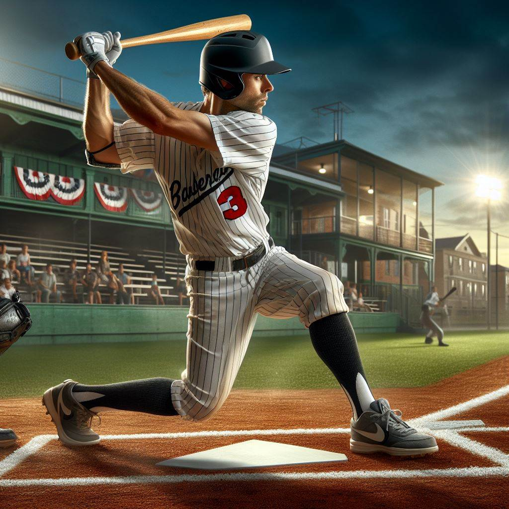
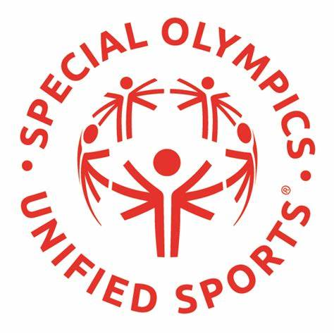
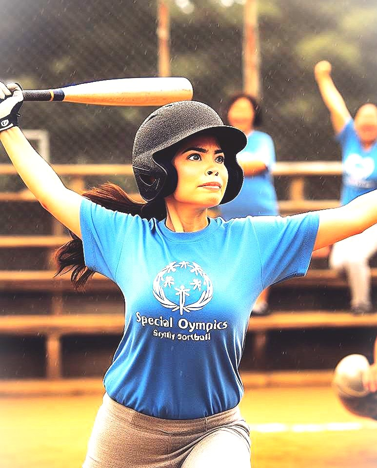

The 3 F's of Surviving
Special Olympics
Softball
-
A. Being an Athlete
-
1. Loving Sports in General
-
i. What Sports are About
- a. Making Friends
- b. Supporting Them as Athletes
-
c. Supporting them as a Team-mate and Bettering
Yourself as an Athlete
-
ii. Loving Sports Means Staying Positive "win or lose"
- iii. Getting Together and Having a 'Good Time'
-
2. Choosing a Specific Sport
- i. Find Their Abilities through a Challenge
-
ii. Find Which Sport is most Fun for You Personally and
Gives You the Best Felling of Achievement
-
iii. I Personally Chose Softball
- a. Good at it and can play every position
-
b. My strength on the field allows me to help others
and make friends
-
c. It became a Challenge that I had to Achieve and set
my mind to
-
3. Dedicating Yourself to Your Sport
-
i. Why Dedicate Yourself?
- a. Your Friends and Your Coach
- b. Family and Fans
- c. Improve at the Sport You Love
-
ii. How to Dedicate Yourself
- a. Preparing for Short-falls
- b. Get Backup
- c. Try Even Harder
-
iii. What Dedication Means
- a. Dedication Means Linear Improvement
- b. Got to Love the Sport
-
c. Keep Going, Keep Practicing, Even if It's Hard

-
B. Special Olympics
-
1. Different Teams
- i. Named after Actual MLB Teams
-
ii. My Team was "The Cardinals" and We Played our First
Game at the WhiteCaps Stadium Against The Tigers
- iii. Divers Skill-Levels and Handicaps
-
2. The Special Olympics Organization
-
i. Helps Place Athletes in Sports that align with their
Personal Capacities and Age Ranges
-
ii. The Number on My Jersey and What I Conquered and
Achieved
-
iii. Coach, Score-keepers, Refs and All Volunteers Make-up
the Organization and Help Get People Interested in Sports
-
3. Numerous Different Sports
- i. I personally played Basketball and Softball
- ii. There's a Sport for Everyone
-
iii. The Number of Different Options for Athletes is
Incredible! Gives Everyone a Chance!
-
4. All Athletes Considered Equal No Matter What
- i. No Matter Their Disabilities
- ii. No Matter Their Skill
-
iii. No Matter The Sport You Choose, All Sports Are
Ultimately Equal just like All Athletes are equally
important.

-
C. Softball
-
1. Teamwork
-
2. Different Positions
-
3. It's Fun!
-
4. All This Happens Together!

-
D. The Three F's
-
1. Find A Good Team
-
i. The Competition is Ferce: You Will Not Win if You Don't
Find a Good Team
- ii. Keep Looking
- iii. Be a Team Player: Show Discipline and Respect
-
2. Find Your Position
-
3. Have FUN!